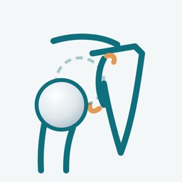

肩関節脱臼/不安定症モデル サポート
「肩関節脱臼/不安定症モデル」は、肩の脱臼と肩関節の不安定症（前方・後方・多方向性）のしくみを3Dで見せながら説明できる、患者説明用のアプリです。
使い方
- 見たい項目（シーン）を一覧から選びます。iPad の横画面では左側、iPhone では画面上部に一覧があります。
- 「なし・軽度・高度」のボタンで病変の程度を切り替えます。「正常と比較」で正常な肩に戻せます。
- 脱臼のシーンでは「▶ 再生」で腕の動きと脱臼の様子を表示します。
- 画面を指でなぞると向きが変わり、ピンチで拡大・縮小できます。「前・後・上・関節窩」のボタンで決まった向きから見られます。
- 下部のボタンで、筋肉の透明度、骨を透かす表示、関節包、名前の表示を切り替えられます。「出典」で参考文献の一覧を表示します。
よくある質問
インターネット接続は必要ですか？
不要です。すべての機能がオフラインで動作します。
医療機器ですか？
いいえ。病気のしくみを説明するための教材であり、診断や治療方針の決定を目的としたものではありません。表示される形や動きは単純化した模式図です。
お問い合わせ
ご意見・不具合のご報告は、下記までメールでお送りください。
natchi@symphony.plala.or.jp
プライバシーポリシー